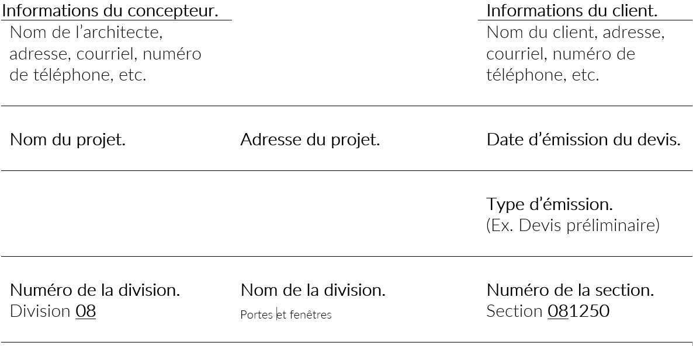

Comprendre la structure d’un devis à 16 divisions
Activer le mode plein écran
Votre navigateur ne supporte pas l’audio.
Structure d’un devis (cahier des charges)
Le devis, également appelé cahier des charges, est un document structuré selon une méthodologie normalisée et uniformisée afin de faciliter la compréhension et l’utilisation des informations qu’il contient. Sa mise en page suit un cadre rigoureux qui assure la clarté et l’efficacité du document, quel que soit le projet auquel il se rapporte
Les divisions du devis
Le devis est organisé en divisions, chacune correspondant à une catégorie spécifique de travaux ou d’éléments du projet. Bien que les devis suivent des normes précises pour garantir l’uniformité, chaque projet est unique, et certaines divisions peuvent ne pas être utilisées si elles ne sont pas pertinentes.
Par exemple, si un bâtiment ne comporte pas d’ascenseurs ou d’escaliers mécaniques, la Division 14 - Systèmes transporteurs ne figurera pas dans le devis.
| Divisions | Descriptions |
| Documents 00 (ou Division 00) | Exigences de soumission, formules de contrats et conditions de contrat |
| Division 01 | Conditions générales |
| Division 02 | Aménagement de l’emplacement |
| Division 03 | Béton |
| Division 04 | Maçonnerie |
| Division 05 | Métaux |
| Division 06 | Bois et plastiques |
| Division 07 | Isolation et étanchéité |
| Division 08 | Portes et fenêtres |
| Division 09 | Finition |
| Division 10 | Produits spéciaux |
| Division 11 | Équipement |
| Division 12 | Ameublement et décoration |
| Division 13 | Installations spéciales |
| Division 14 | Systèmes transporteurs |
| Division 15 | Mécanique |
| Division 16 | Électricité |
Sections de chaque division
À l’intérieur de chaque division, on retrouve plusieurs sections qui détaillent des éléments plus spécifiques des travaux. Chaque section est numérotée et regroupe un ensemble précis d’activités.
Par exemple, dans la Division 02 - Aménagement de l’emplacement, on pourrait retrouver les sections suivantes :
| Numéro de section | Description |
| Section 02050 | Démolition |
| Section 02200 | Terrassement |
| Section 02350 | Pieux et caissons |
| Section 02500 | Pavages et revêtements |
Les sections sont définies en fonction des besoins du projet.
Structure des sections
Chaque section d’une division est subdivisée en trois parties principales.
Partie 1 — Généralités
Cette partie établit les exigences générales et les conditions administratives applicables aux travaux. Elle peut inclure :
-
un sommaire des travaux à exécuter ;
-
les normes de référence à respecter (codes du bâtiment, normes industrielles, etc.) ;
-
une description du système ou des travaux concernés ;
-
les documents ou échantillons à fournir avant et après l’exécution des travaux ;
-
les conditions de transport, d’entreposage et de manutention du matériel ;
-
les mesures de contrôle de la qualité et d’assurance qualité ;
-
toute autre exigence particulière liée au projet.
-
etc.
Partie 2 — Produits
Cette partie détaille tous les matériaux et produits qui seront utilisés dans les travaux décrits. Elle peut préciser :
-
le fabricant des matériaux ;
-
les caractéristiques des produits préfabriqués ;
-
l’équipement requis et ses spécifications ;
-
les critères de contrôle de la qualité des produits;
-
la ou les normes****précises de ces matériaux;
-
etc.
Partie 3 — Exécution
Cette partie décrit précisément les méthodes et techniques à appliquer pour la mise en œuvre des produits mentionnés dans la partie 2. On y retrouve généralement :
-
les exigences d’inspection avant et après installation ;
-
les travaux préparatoires requis avant l’installation ;
-
les procédures de montage et d’installation des éléments ;
-
les exigences relatives au contrôle de qualité sur le chantier;
-
etc.
Exemple de l’organisation d’une division
Division 02 — Aménagement de l’emplacement
-
Section 02050 — Démolition
-
Partie 1 — Généralités
-
Partie 2 — Produits
-
Partie 3 — Exécution
-
Table des matières du devis
Une table des matières est incluse au début du devis ou au début de chaque division. Elle liste les sections incluses dans le document afin de faciliter la consultation.
Exemple pour la Division 08 - Portes et fenêtres
| Division 08 - Porte et fenêtre | |
| Section 08 12 50 | Portes et cadre en aluminium (entrée) |
| Section 08 16 10 | Portes et cadres en acier |
| Section 08 21 00 | Portes intérieures de bois |
| Section 08 71 00 | Quincaillerie |
Les numéros de section permettent d’identifier rapidement l’information recherchée.
Remarquez que les numéro des sections débutent avec le numéro de la division à laquelle les sections sont liées (section 08 12 50).
Exemple d’une mise en page d’une section d’un devis

Section 08 12 50 – Portes et cadres en aluminium
Partie 1 - Généralités
1.1 Travaux connexes
1.1.1. Section 079000 - Produits d’étanchéité - Calfeutrage des joints entre les cadres et les autres éléments du bâtiment.
1.1.2. Section 087100 - Pièces de quincaillerie de finition - Fourniture des pièces de quincaillerie de finition.
1.2 Dessins d’atelier
1.2.1. Soumettre les dessins d’atelier conformément aux prescriptions de la section 013400 – Dessins d’atelier, fiches techniques et échantillons.
1.2.2. Les dessins doivent indiquer chaque type de porte et de cadre, préciser le type et la coupe des profilés extrudés, le mode d’assemblage, les détails des pièces de renfort des sections et des éléments de quincaillerie, le genre de fini, ainsi que l’emplacement des fixations apparentes et des plaques signalétiques des fabricants.
Etc.
Partie 2 - Produits
2.1. Matériaux
2.1.1. Profilés d’aluminium extrudés : alliage AA6063, de qualité d’anodisation T5 selon « Aluminum association » avec un fini clair anodisé classe II, 10 um.
2.1.2. Isolation thermique : 1,3 mm d’aluminium extrudé, même fini que la porte avec un séparateur thermique en PVC.
Etc.
2.4 Fabrication
2.4.1. Les portes et les cadres doivent provenir du même fabricant.
2.4.2. Les portes et les cadres doivent être fabriqués suivant les profils et les dimensions frontales maximales indiquées.
Etc.
Partie 3 - Exécution
3.1 Installation
3.1.1. Installer les cadres d’aplomb, d’équerre, de niveau, à la bonne hauteur et d’alignement par rapport aux ouvrages adjacents.
3.1.2. Assujettir les cadres solidement à la structure.
3.1.3. Maintenir les cadres en position ferme à l’aide d’étais pendant les travaux de mise en place. Installer des entretoises provisoires en bois disposées horizontalement aux tiers de l’ouverture des baies de porte, afin de maintenir constante la largeur du cadre. Installer un étai vertical sous la traverse supérieure au centre de la baie, lorsque la largeur de cette dernière excède 1200 mm. Enlever les entretoises et les étais une fois les cadres bien encastrés.
3.1.4. Installer les portes et les pièces de quincaillerie conformément aux gabarits et selon les instructions du fabricant.
Etc.
Système de classement de la documentation technique en détail
Exemples de sections que peut contenir chacune des 16 divisions.
| Documents 00 (division 00) | Exigences de soumission, formules de contrat et conditions du contrat |
| 00 00 10 | Table des matières |
| 00 01 00 | Instructions aux soumissionnaires |
| 00 02 00 | Renseignements à la disposition des soumissionnaires |
| 00 03 00 | Formules de soumissions |
| 00 07 00 | Conditions générales du contrat |
| 00 08 50 | Dessins et tableaux |
| 00 09 00 | Addenda et modifications |
| Division 1 | Exigences générales | Division 2 | Aménagement de l’emplacement |
| 01 01 00 | Sommaire des travaux | 02 01 00 | Reconnaissance du sous-sol |
| 01 04 00 | Solutions de rechange | 02 01 01 | Préparation du terrain |
| 01 09 00 | Normes de références | 02 20 00 | Terrassement |
| 01 30 00 | Document à remettre | 02 35 00 | Pieux et caissons |
| 01 40 00 | Contrôle de la qualité | 02 50 00 | Pavages et revêtements |
| 01 65 00 | Mise en service des systèmes | 02 60 00 | Distribution d’eau |
| 01 70 00 | Clôture du contrat | 02 90 00 | Aménagement paysager |
| Division 3 | Béton | Division 4 | Maçonnerie |
| 03 10 00 | Coffrages pour béton | 04 10 00 | Mortier |
| 03 20 00 | Armatures pour béton | 04 20 00 | Accessoires de maçonnerie |
| 03 37 00 | Cure du béton | 04 30 00 | Pierres |
| 03 60 00 | Coulis | 04 50 00 | Réfection de maçonnerie |
| 03 70 00 | Réparation et nettoyage du béton | 04 00 00 | Armatures et connecteurs |
| Division 5 | Métaux | Division 6 | Bois, plastiques et composites |
| 05 01 00 | Métaux, matériaux | 06 05 00 | Attaches et adhésifs |
| 05 10 00 | Charpentes en métal | 06 10 00 | Charpenterie |
| 05 20 00 | Poutrelles en métal | 06 13 00 | Construction en gros bois d’œuvre |
| 05 30 00 | Platelage en métal | 06 15 00 | Système de charpente en bois |
| 05 50 00 | Métal ouvré | 06 40 00 | Ébénisterie |
| 05 60 00 | A****cier ornemental | 06 60 00 | Plastique ouvré |
| Division 7 | Isolation thermique et étanchéité | Division 8 | Portes et fenêtres |
| 07 10 00 | Imperméabilisation | 08 10 00 | Portes et cadres en métal |
| 07 19 00 | Pare-vapeur et pare-air | 08 20 00 | Portes en bois et portes en plastique |
| 07 20 00 | Isolation thermique | 08 50 00 | Fenêtres en métal |
| 07 30 00 | Bardeaux et tuiles de couvertures | 08 70 00 | Quincaillerie |
| 07 40 00 | Bardage en acier | 08 80 00 | Vitrage |
| 07 60 00 | Solins, contre-solins et métal feuill. | 08 90 00 | Murs-rideaux vitrés |
| 07 90 00 | Panneaux muraux métalliques profilés |
| Division 9 | Finition | Division 10 | Produits spéciaux |
| 09 20 00 | Fourrures, lattage et enduits | 10 10 00 | Tableaux d’affichage |
| 09 25 00 | Panneaux de gypse | 10 15 00 | Compartiments et cabines |
| 09 30 00 | Carrelages | 10 30 00 | Poêle et foyer |
| 09 50 00 | Éléments et produits d’insonorisation | 10 45 00 | Dispositifs de contrôle de la circulation piéton. |
| 09 55 00 | Planchers en bois | 10 52 00 | Matériel de lutte contre l’incendie |
| 09 65 00 | Couvre-planchers souples | 10 65 00 | Cloisons mobiles |
| 09 95 00 | Revêtements muraux | 10 80 00 | Accessoires de salles de toilette et de bain |
| Division 11 | Équipement | Division 12 | Ameublement et décoration |
| 11 01 00 | Équipement d’entretien | 12 05 00 | Tissus |
| 11 05 00 | Équipement de bibliothèque | 12 30 00 | Armoires et comptoirs préfabriqués |
| 11 12 00 | Distributeurs automatiques | 12 50 00 | Garnitures de fenêtres |
| 11 70 00 | Équipement médical | 12 80 00 | Plantes d’intérieur et jardinières |
| Division 13 | Installations spéciales | Division 14 | Systèmes transporteurs |
| 13 01 10 | Structures gonflables | 14 10 00 | Petits monte-charge |
| 13 12 00 | Constructions préfabriquées | 14 20 00 | Ascenseurs et monte-charge |
| 13 15 00 | Piscines et bassins | 14 30 00 | Escaliers mécaniques et trottoirs roulants |
| 13 60 00 | Systèmes d’énergie solaire | 14 80 00 | Échafaudages |
| Division 15 | Mécanique | Division 16 | Électricité |
| 15 05 00 | Matériaux et méthodes de base | 16 05 00 | Matériaux et méthodes de base |
| 15 30 00 | Protection-incendie | 16 20 00 | Production d’énergie électrique |
| 15 40 00 | Plomberie | 16 40 00 | Branchement et distribution |
| 15 50 00 | Chauffage, ventilation et conditionnement de l’air (CVCA) | 16 50 00 | Éclairage |
| 15 65 00 | Réfrigération | 16 70 00 | Communications |
| Remarquez bien les éléments mis en orange, ce sont tous des matériaux qui sont faits de métal, d’acier, etc. Remarquez maintenant les éléments mis en vert, à la division 05 - Les métaux. C’est exactement le type de piège que vous pourriez retrouver comme situation. Exemple: définir le prix, pour une soumission, de la division des métaux (05). Il faut alors penser à calculer uniquement ce qui se trouve dans cette division. L’armature de béton, par exemple, se trouve plutôt dans la division 03 - Le béton. |